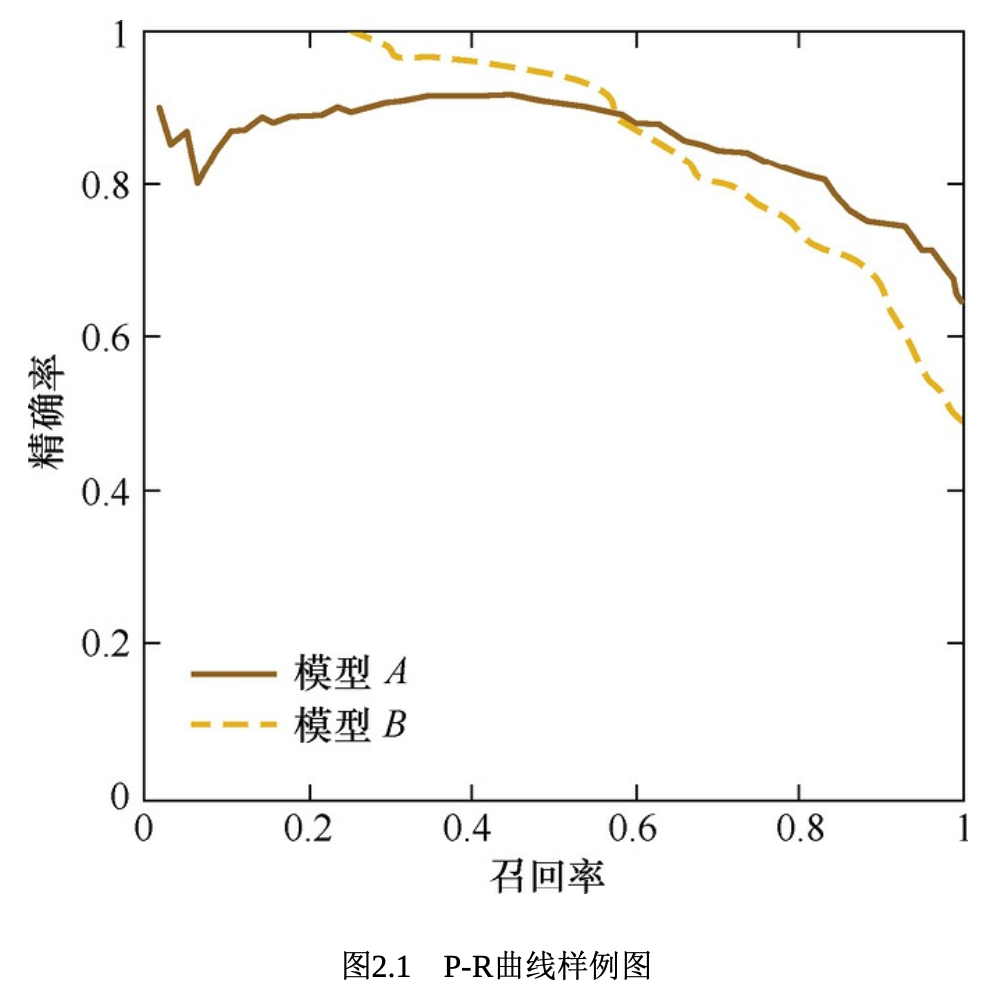

ML Fundamentals
Feature Engineering¶
Two types of data: - Structured / Tabular data: Could be viewed as a data table from the relational database, which every columns has their clear definition, including numerical and categorial data types. - Unstructured data: Includes text, image, audio, video data, and the information that this type of data contains cannot be represented easily as a numerical value, and also they do not have clear categorical definition, furthermore, the size of these data are not identical.
Normalization of Features¶
Why does one need to do normalization on numerical features?¶
In order to eliminate the magnitude impact between features, we should always do normalization to the features that we use, i.e. to uniformly normalize all the features to a similar range, so that it could help compare between different metrics. There are two different types of normalization that people most commonly use:
- min-max scaling: It linearly changes the original data so that the data could be projected to [0, 1] range so that it is an equal ratio transformation of the original data:
\(\(X_{\text{norm}} = \frac{X-X_{\text{min}}}{X_{\text{max}-X_{\text{min}}}}\)\)
- Z-Score normalization: It would project the original data to a mean of 0 and variance = 1 distribution. Specifically, assume that the original feature has mean \(\mu\) and variance \(\sigma\) , then the normalization equation would be defined as:
\(\(Z = \frac{x-\mu}{\sigma}\)\)
Using stochastic gradient descent (SGD) as an example, when two numerical features, \(x_1\) of range [0,10] and \(x_2\) of range [0,3], then when the \(x_1\) and \(x_2\) are not normalized, the  gradient descent would not be as efficient as when one does the normalization of the features. However, feature normalization is not always working. In real life, whenever a model utilizes SGD, it is suggested to use the normalization, including linear regression, logistic regression, support vector machine, neural networks, whereas decision tress it does not help. As for decision tree models, the node split usually is determined by the data and how much 1information gain ratio that data contains about X. This information gain ratio is not impacted by whether the feature has been normalized, rather it would not change the information gain of the specific feature X.
gradient descent would not be as efficient as when one does the normalization of the features. However, feature normalization is not always working. In real life, whenever a model utilizes SGD, it is suggested to use the normalization, including linear regression, logistic regression, support vector machine, neural networks, whereas decision tress it does not help. As for decision tree models, the node split usually is determined by the data and how much 1information gain ratio that data contains about X. This information gain ratio is not impacted by whether the feature has been normalized, rather it would not change the information gain of the specific feature X.
Categorical Features¶
Categorical features include male / female, blood type (A,B,AB,O) and etc, which can only select values from a finite set of choices. Categorical features original input are mostly strings. Despite that decision trees and some other numbers of models can directly take in the strings, for logistic regression or SVM models, the categorical features need to be translated to numerical form so that they could properly work.
How to do feature engineering on categorical features?¶
One would need to encode the features to a higher dimensional vector to represent them in the model. - ordinal encoding: usually used to treat those data that has ordinal sequence, for example when scoring we have high > middle > low, then the ordinal encoder would help to describe this type of sequence via giving it a numerical ID. For example, we could represent high as 3, middle as 2 and low as 1 in this case, which helps retain the high to low relationship. - one-hot encoding: usually used to treat features that do not have ordinal relationships, for example, for blood type, one could directly use the [1,0,0,0], [0,1,0,0], [0,0,1,0] and [0,0,0,1] to represent the different types. Note: - use of sparse vector for saving space - high-dimensional features can be difficult in following scenarios: 1) K-nearest neighbors, the distance between two high-dimensional vectors can be hard to measure, 2) logistic regression, the parameters can increase with higher dimensions, thus causing overfitting problems and 3) only some of the dimensions could be helpful when doing clustering or predictions, so one could think to reduce dimensions with feature selections. - binary encoding: using binary to do a hash mapping on the original category ID, this can help save space when comparing with the one-hot encoding as it is usually of fewer dimensions.
High Dimensional Feature Crosses¶
What are feature crosses? And how to deal with high-dimensional feature crosses?¶
Using single features to combine them together via dot-product or inner-product, one can get a combination of two features to help represent nonlinear relationships.
Using logistic regression as an example, when a data set contains feature vector \(X=(x_1, x_2, ..., x_k)\) then one would have \(Y = \text{sigmoid}(\sum_i \sum_j w_{ij} \langle x_i, x_j \rangle)\) . \(w_{ij}\) is of dimension \(n_{x_i} \cdot n_{x_j}\) . But when \(n_{x_i} \times n_{x_j}\) is huge, especially in use cases of website customers and number of goods, this can be really huge dimension. So **one way to get around this is to use a k-dimensional low-dimension vector (k << m, k << n). Now, \(w_{ij} = x_i' \cdot x_j'\) and now the number of parameters one needs to tune is \(m \times k + n \times k\) . This can also be viewed as the 2matrix vectorization, that has been widely used in the recommendation systems. **
We have understood how to use dimension reduction to reduce the number of parameters that the model needs to learn given a feature cross of two high-dimensional features. But in reality, we are facing a variety of high-dimensional features. So a single feature crosses of all the different pairs would induce 1) too many parameters and 2) overfitting issues.
How to effectively select the feature combinations?¶
We introduce a feature cross selection based on decision tree models. Taking CTR prediction as an example, assume that the input includes age, gender, user type (free vs paid), searched item type (skincare vs foods), etc. We could thus make a decision tree from the original input and their labels.  We could then view the feature crosses from the tree, that contains four different type of pairs:
1. age + gender
2. age + searched item type
3. paid user + search item type
4. paid user + age
How to best construct the decision trees? One can use the Gradient Boosting Decision Tree，GBDT or use the link to get a better idea of the algorithm. The idea behind is that whenever before constructing a decision tree, we first calculate the error from the true value and iteratively construct the tree from the error.
We could then view the feature crosses from the tree, that contains four different type of pairs:
1. age + gender
2. age + searched item type
3. paid user + search item type
4. paid user + age
How to best construct the decision trees? One can use the Gradient Boosting Decision Tree，GBDT or use the link to get a better idea of the algorithm. The idea behind is that whenever before constructing a decision tree, we first calculate the error from the true value and iteratively construct the tree from the error.
Textual Descriptive Models¶
Related Content: Ngram_Language_Modeling
Text is a category of unstructured data. How to work with textual data has always been one of the most important research directions.
What are some of the textual descriptive models what pros and cons each have?¶
- Bag of words: Consider each article as a bag of words, ignoring the sequence of how each word appears. Specifically, it separates the entire paragraph of texts at word unit and represent each paragraph as a long vector. Each dimension in the vector is a word, and the weight represents how important the word is in the original article.
- TF-IDF (Term Frequency-Inverse Document Frequency): Is often used to calculate the weight of the words, \(\text{TF-IDF}(t,d)=\text{TF}(t,d) \times \text{IDF}(t)\) , where \(\text{TF}(t,d)\) represents the frequency of word t in document d, whereas \(\text{IDF}(t)\) is the reverse document frequency to measure word t's importance in grammar, corresponds to equation \(\(\text{IDF}(t) = log^{\frac{\text{total article}}{\text{total article that contains word} t +1}}\)\) the general meaning behind is that if a word appears so in various articles, then it means that it is a commonly used word, hence it would not contribute much in differentiating the specific meaning behind each articles, hence it should be penalized when weighting.
- N-gram: when "natural language processing" being separated into 3 words as word unit, the meaning of this phrase is totally different from it is now, hence usually we could add n words as a feature unit into the vector to form the N-gram model.
- Topic Model
- Word Embedding: word embedding is a family of word vector models, the main idea is to project each word to a low-dimensional space (K = 50 -300 dimensions) using a dense vector. Each dimension in K-dimension would be viewed as a implicit topic. In general, in shallow learning models (traditional ML models), a good feature engineering step can help extremely good performance. Deep learning on the other hand, could help us with an automated feature engineering way via hidden layers. Hence, it makes sense for the deep learning model to beat the shallow learning model in general. Recurrent neural network and convolutional neural network are both good at capture the characteristics of the text while lowering the number of parameters that the model needs to learn, which can expedite the speed of training and also lower the risk of overfitting.
Word2Vec¶
One of the most common word embedding models, it is actually a shallow neural network. It can be of two different types of structures: 1. Continuous Bag of Words 2. Skip-gram
How does word2vec work? what is the difference between word2vec and LDA (Latent Dirichlet allocation)¶
- Continuous Bag of Words
- Goal is to use contextual words that predict the probability of the current word to appear.
- Structure:
- input layer: w(t-2), w(t-1), ..., w(t+1), w(t+2) using one-hot encoding
- projection/hidden layer: sum(probability)
- output layer: w(t) using softmax
- Skip-gram
- Goal is to use the current word to predict the probability of each contextual word.
- Structure:
- input layer: w(t) using one-hot encoding
- projection/hidden layer
- output layer: w(t-2), w(t-1), ..., w(t+1), w(t+2) using softmax
Image Data not sufficient - Cold Start¶
When doing machine learning modeling, one very big problem that everyone may face would be not sufficient training data.
What would you do if the training data is not sufficient? How to mitigate this issue?¶
Information that a model can provide include 1) information from training and 2) heuristic information that people provide from model formation (including design / learn / deduct). When training data not enough, it means that the model lacks information from training data, but need more a priori. a priori can be effective on models, including certain internal structure of the model, assumption or constraints. a priori can also be applied to datasets, for example using certain assumption to change / tune or expand the training data so it contains more effective information, which can facilitate model training and learning.
Overfitting¶
One big problem that comes from not enough data is overfitting, which is that the model performs well on training set but the evaluation / prediction set is not good. The treatment can come from two different categories: - methods based on models that decrease the risk of overfitting - simplify model - downgrade from non-linear to linear model - apply constraints to shrink hypothesis space - L1 / L2 regularization - integrated training - dropout hyperparameters - data augmentation: manipulating data to expand the data set - image space manipulation - rotation / shrinkage / expansion / crop of the original image when working with image data - addition of noise to the image - color change of image - hue / contract / brightness of image - image feature engineering / extraction - data expansion or #over-sampling via SMOTE (Synthetic Minority Over-sampling Technique) - using GAN or other generative methods for good samples - transfer learning from other models and data - using pre-trained general model from big dataset, we could fine-tune specifically using the small datasets
Model Evaluation¶
Evaluation metrics and their limitations¶
When doing model evaluation, the classification / sort / regression problems seems to always use different metrics for evaluation.
Accuracy and its limitations¶
The accuracy only measures the number of correct labels divided by the number of total labels. This can potentially lead to a issue when the number of labels are limited in the dataset. When negative samples composed 99% of the data, if every label is a negative one, we still get 99% accuracy. So, if we use more effective mean accuracy that quantifies the mean accuracy under each category, it would be a better metrics to work with.
Precision & Recall and their balance¶
Concept of Precision & Recall¶
Now we need to introduce the concept of precision and recall. Precision cares about the correctness of positive predictions, whereas recall cares about coverage of actual positives. Precision and recall trade off via the decision threshold. In a binary classification problem: $$\text{Precision} = \frac{N_{\text{true positive}}}{N_{\text{true positive}} + N_{\text{false positive}}} = \frac{N_{\text{true positive}}}{N_{\text{positive predictions}}} $$
$$\text{Recall} = \frac{N_{\text{true positive}}}{N_{\text{true positive}} + N_{\text{false negative}}} = \frac{N_{\text{true positive}}}{N_{\text{actual positives}}} $$ The F1 score is their harmonic mean: $$\text{F1} = \frac{2(\text{Precision})(\text{Recall})}{\text{Precision} + \text{Recall}} = \frac{2N_{\text{true positive}}}{2N_{\text{true positive}}+N_{\text{false positive}}+N_{\text{false negative}}} $$ this value ranges from 0 to 1 and penalizes imbalance, thus when either precision or recall is low, F1 drops sharply. F1 should be used when false positives and false negatives matter about equally, especially with imbalanced classes.
Confusion Matrix Implementation¶
import numpy as np
true_labels = np.array([0, 0, 1, 1, 0, 1, 0, 1, 1, 1])
predicted_labels = np.array([0, 1, 0, 1, 0, 1, 1, 1, 1, 0])
TP = np.sum((predicted_labels == 1) & (true_labels == 1))
TN = np.sum((predicted_labels == 0) & (true_labels == 0))
FP = np.sum((predicted_labels == 1) & (true_labels == 0))
FN = np.sum((predicted_labels == 0) & (true_labels == 1))
print("Confusion Matrix:\n TP: ", TP, "\tFP: ", FP, "\n FN: ", FN, "\tTN: ", TN)
'''Output:
Confusion Matrix:
TP: 4 FP: 2
FN: 2 TN: 2
'''
Precision & Recall in Ranking / retrieval variants¶
def precision_at_k(ground_truth_set, ranked_list, k):
return len(set(ranked_list[:k]) & ground_truth_set) / k
# when there are more than one query / user / example that we would like to test on our predictions, we use the weighted average of the precision_at_k.
def mean_precision_at_k(ground_truth_sets, ranked_lists, k):
# ground_truth_sets and ranked_lists are aligned lists
return sum(precision_at_k(g, r, k) for g, r in zip(ground_truth_sets, ranked_lists)) / len(ground_truth_sets)
Example: when dealing with video vague search functionality, it seems that the search ranking model can return the top 5 precision pretty high, however, the user in reality still cannot find the videos they want, especially those unpopular ones. Where does this problem coming from?
Root cause analysis: Coming back to the example above, the top 5 precision being really high, meaning that the model can get the true positive results on a pretty good level with a certain set of positive predictions; however, when it comes down to cases where users would like to find not so popular videos, the precision of ranks can be rather no so useful as the user is looking for not so well-defined labels, hence the good precision of popular videos would not be helpful for this case as model is not providing all the relevant videos to the user and this is a problem of not so good recall rate. Let's say for the top 5 results, the precision@5 to be 100%, meaning that the correctness of the positive results is pretty higher, however, the recall@5 can still be 5%, meaning that only predicted 5 true positives although there are 100 actual positives involved. When doing model evaluation, it means that we should be focusing on both precision and recall, and also using different top N values for observations.
Hence, in general, when people evaluate the goodness of a sort algorithm, they also look at the P-R curve, where in this curve, the x-axis corresponds to recall rate whereas the y-axis corresponds to precision rate.
Use of P-R Curve for model evaluation and threshold choice¶
 Each data point on the curve corresponds to a precision-recall combination at a certain threshold for True samples of choice, for example 0.95 / 0.9, etc. The closer to the origin (0,0) point, the bigger the threshold is.
How to pick the threshold in practice¶
- Capacity-constrained: If reviewers can handle 300 cases/day, pick the smallest threshold that yields ≈300 flags/day; report the resulting (Precision, Recall).
- Recall target: If policy demands ≥95% recall, choose the lowest threshold achieving that, then report precision (and expected review load).
- Cost-based: Minimize \(\text{Cost}_{\text{false positives}}\cdot{\text{False Positives}}+\text{Cost}_{\text{false negatives}}\cdot{\text{False Negatives}}\) over thresholds. Also report AUPRC to compare models independent of a single threshold (higher is better, especially with class imbalance).
Root-mean Squared Errors (RMSE)¶
Root-mean squared error has long been used as the metric for evaluating the regression model.
Example: as a streaming company, one would say that prediction of traffic for each series can be really important when it comes down to ads bidding and user expansion. One would like to use a regression model to predict the traffic trend of a certain series, but whatever regression model that one uses, the RMSE metric ends up being really high. But, in reality, the model 95% of the time predict error is less than 1%, with really good prediction results. What might be the reason of this extraordinarily good results?
Root cause analysis: From what the example, says there are two possible ways for the RMSE to be ineffective: 1) n being really small hence at this moment, the calculated error cannot be measurable anymore, 2) all the errors between actual value and predicted value are over- / under-predicting that the summation at the end being really high, however, in reality it is not the case and 3) one outlier being really off when comparing with other data points, it is contaminating the RMSE to be really big. Coming back to the question, as 95% of the time to model has really good prediction error hence it means the other 5% of the time the model can be really off with big outliers and it could happen when a series with small traffic / newly come-out / newly accoladed could produce this big error.
How to solve: 1) When we think these outliers are noises, then we need to filter them out at the early stage when doing data cleaning, 2) If we do not think they are noises, then we need to further improve the prediction capability of our algorithm so that we could somehow model the formation of these outliers. and 3) We could also use a better metric for the model evaluation. There are indeed better evaluation metrics that are of better robustness than RMSE, for example, Mean Absolute Percentage Error (MAPE):
Mean Absolute Percentage Error¶
When comparing with RMSE, MAPE normalizes the error rate of each data point to mitigate the outlier impact from the absolute error.
Expanding on the regression evaluation metrics¶
Quick definitions¶
Let \(y\) be the true value and \(\hat y\)​ the prediction.
sMAPE (common form):
\(\(\frac{100}{n}\sum\frac{2|y-\hat y|}{|y|+|\hat y|}\)\)
When to use which¶
- Use RMSE when:
- Big errors are much worse than small ones (squared penalty).
- The target never hits zero/near-zero and units are meaningful (e.g., dollars, °C).
- You care about calibration and smooth optimization (differentiable).
- Use MAPE when:
- Stakeholders want an average percentage error that is easy to read.
- True values are strictly positive and not near zero (e.g., revenue, demand > 0).
- You're okay that over-forecasts and under-forecasts are weighted differently (MAPE tends to penalize under-forecasting less when \(y\) is small).
- Use sMAPE when:
- You want a percentage-like metric that is less explosive near zero than MAPE.
- You have occasional zeros or tiny values.
- You accept that sMAPE has its own quirks (bounded but not perfectly symmetric in practice).
Strengths & gotchas (TL;DR)¶
- RMSE
- Sensitive to large mistakes (good if that matches cost).
- Outlier-heavy data can dominate the score.
- Scale-dependent hard to compare across series with different scales.
- MAPE
- Intuitive (%).
- Undefined at y=0; huge when y ~ 0.
- Can favor under-forecasting for small y.
- sMAPE
- Handles zeros better; bounded.
- Still quirky near zero and not a true solution for optimization.
- Different papers/tools use slightly different variants
Other basic metrics you should know¶
- MAE: Robust to outliers vs RMSE; easy to explain (units).
Simple decision guide¶
- Zeros or tiny targets?
- Avoid plain MAPE. Prefer sMAPE
- Large errors are very costly?
- Use RMSE (or set a business-weighted loss).
- Need % interpretability across series?
- Use sMAPE, or MASE (if comparing to a baseline).
- Care about relative ratios?
- Use RMSLE/MSLE (with positive targets).
- Mixed scales or many series?
- WAPE or MASE are safe, comparable choices.
Practical tips¶
- If you must report a % and have zeros, say: We use sMAPE (formula shown) instead of MAPE to handle zeros; we also report WAPE for scale-free comparability.
- Always state the exact formula you use (especially for sMAPE) to avoid confusion.
- Consider reporting two metrics: one business-facing (% like WAPE/sMAPE) + one technical (MAE/RMSE).
Overall, one should always report a pair / set of MECE metrics to evaluate their algorithms to better understand & discover the problems in the model, to better solve cases in real business settings.
ROC Curves¶
Binary classifiers are the mostly used and applied classifier in the ML industry. There are a lot of different metrics that one could use for evaluate the binary classifiers, including precision, recall, F1 score and P-R curve. But these metrics are only reflecting one aspect of the model. Hence, ROC curves can be of really good use.
What is a ROC curve¶
ROC curves are called receiver Operating Characteristic Curves, which established from the military field and are often used in the medical industry as well. This curve's x-axis is the false positive rate, whereas the y-axis is the true-positive rate.
\(\(\text{False Positive Rate} = \frac{\text{False Positive}}{\text{Negative}}\)\) \(\(\text{True Positive Rate} = \frac{\text{True Positive}}{\text{Positive}}\)\) Example: There are 10 patients, where in there are 3 positive cancer patients, and the rest are negative patients. The hospital decides to do diagnosis on these customers and figured that 2 are true positive cancer patients. In this case:
How to draw a ROC curve¶
- What is needed
- True labels \(y \in \{0,1\}\)
- A score for the positive class per item (probability or decision score).
| Sample Number | True Label | Model Output Probability as Positive |
|---|---|---|
| 1 | Positive | 0.9 |
| 2 | Positive | 0.8 |
| 3 | Negative | 0.7 |
From this example, we could then plot out the true positive rate (TPR) as the x-axis and false positive rate (FPR) as the y-axis for the curve, hence getting the ROC curve. There is a more direct way to plot the ROC curve as well:
- Getting the number of Positive & Negative samples, i.e. assuming number of positive samples to be P and negative to be N.
- Getting the x-axis labels to be the count of negative samples, and y-axis labels to be the count of positive samples, then use the model output probability to do sorting of the samples
- Now draw the ROC curve from origin, whenever seeing a positive sample to draw a vertical line segment of +1 increment on y-axis, whenever seeing a negative sample then we draw a horizontal line segment along the x-axis until we reach the final sample with curve ending at (1,1).
from matplotlib import pyplot as plt
from numpy import random
truth_labels = [1 if random.rand() > 0.6 else 0 for _ in range(500)]
# we generate some random predictions that would normally be obtained from the model
# If a predicted probability is higher than the threshold, it is considered to be a positive outcome
predicted_probs = [max(0, min(1, random.normal(loc=label, scale=0.3))) for label in truth_labels]
def roc_curve(truth_labels, predicted_probs):
thresholds = [0.1 * i for i in range(11)]
tprs, fprs = [], []
for threshold in thresholds:
tp = fp = tn = fn = 0 # initialize confusion matrix counts
# for each prediction
for i in range(len(truth_labels)):
# calculate confusion matrix counts
if predicted_probs[i] >= threshold:
if truth_labels[i] == 1:
tp += 1
else:
fp += 1
else:
if truth_labels[i] == 1:
fn += 1
else:
tn += 1
# track the TPR and FPR for this threshold
tprs.append(tp / (tp + fn)) # True Positive Rate (TPR)
fprs.append(fp / (tn + fp)) # False Positive Rate (FPR)
return tprs, fprs
tprs, fprs = roc_curve(truth_labels, predicted_probs)
plt.plot(fprs, tprs, marker='.')
plt.show()
How to calculate the AUC (area under curve)?¶
As simple as it could be, AUC is the area under the ROC curve, which can quantitatively reflect the model performance based on ROC curve. It is simple to calculate AUC along RUC x-axis. Due to that ROC curve tends to be above y=x, AUC values are usually between 0.5-1. The bigger the AUC is, the better the classifier is as the more likely that the classifier put the true positive samples at the front.
def compute_aucroc(tprs, fprs):
aucroc = 0
for i in range(1, len(tprs)):
aucroc += 0.5 * abs(fprs[i] - fprs[i - 1]) * (tprs[i] + tprs[i - 1])
return aucroc
aucroc = compute_aucroc(tprs, fprs)
print(f"The AUC-ROC value is: {aucroc}") # The AUC-ROC value is: 0.9827272125066242
We have touched on the P-R curve for evaluating classification or sort algorithms. Comparing with P-R curve, there is one important character of ROC curve, which is that when positive / negative sample distribution change significant, the ROC curve shape could stay rather consistently whereas the P-R curve shape would be changing. This makes the ROC curve to mitigate the interference from diverse test sets and could more objectively evaluate the algorithm. In reality, when positive counts are much less than the negative counts, when switching dataset the data can be of big change, so a stable and robust evaluation would be important. Hence, usually ROC can be used in more variety of scenarios and could be utilized in sort / recommendation / ads.
What each curve shows¶
- ROC: y = True Positive Rate (recall), x = False Positive Rate.
"How well do I separate positives from negatives overall?" _"If I take the items my model flags as positive, how many are actually positive? - PR: y = Precision, x = Recall.
"When I go after positives, how clean are my catches?" _"As I move the threshold, how well do I trade off catching positives vs accidentally flagging negatives?"
When to use which¶
- Use PR (Precision & Recall) when positives are rare or review capacity is limited.
Examples: fraud, disease screening, anomaly detection, search/retrieval, human-in-the-loop queues.
Why: PR focuses on the quality of retrieved positives. Baseline matters: random AUPRC prevalence (e.g., 1% positives random AUPRC = 0.01). - Use ROC when classes are roughly balanced or you care about both error types evenly.
Examples: many general classifiers, spam vs ham with moderate prevalence, A/B classifiers in balanced datasets.
Why: ROC is insensitive to class imbalance and summarizes ranking quality across thresholds. Random AUC-ROC = 0.5.
Intuition about imbalance¶
- With 1,000,000 negatives and 1,000 positives, an FPR of 0.5% looks tiny on ROC, but it's 5,000 false alarms precision will be poor.
PR makes this visible; ROC can look deceptively great.
How to choose in practice¶
- Rare positives or ops-constrained? Prefer PR (and report Precision/Recall at your operating threshold or Precision@k).
- Balanced costs/distribution? ROC is fine (and stable).
- Comparing models broadly? Report both AUC-ROC and AUPRC, plus a point metric at your intended threshold.
Reading the curves¶
- ROC: closer to top-left is better; AUC near 1 is strong.
- PR: higher curve is better; sustaining high precision as recall grows is ideal.
- Curves can cross. Pick the model that’s better in the recall region you care about (e.g., recall ≥ 0.9). Consider partial AUC (ROC) or AUPRC over a recall range.
What to report (good default)¶
- AUPRC + AUC-ROC (global picture)
- (Precision, Recall) (or \(F_\beta\)) at the chosen threshold
- If capacity-limited: Precision@k (and expected volume flagged)
Use of cosine distance¶
How to evaluate the distance between samples can also define the optimization target and training method. In ML problems, we usually take the features to be of vector form, so when analyzing the two feature vector similarity, we could use cosine similarity. The cosine similarity can range from -1 to 1, where when two vectors are exactly the same, the cosine similarity becomes 1. Hence, when looking at distances, 1-cosine similarity becomes the cosine distance. Overall, the cosine distance is [0,2] and the same two vectors their cosine distance becomes 0.
Definition of Euclidean Distance & Cosine Distance¶
Euclidean Distance For vectors \(x,y\in\mathbb{R}^d\):
- What it measures: straight-line (L2) distance in space.
- Sensitive to scale/magnitude: doubling a vector doubles distances.
- Squared form: sometimes use \(\|x-y\|^2\) (no square root) for speed/convexity.~
Cosine Distance Start with cosine similarity:
Cosine distance (common definition): \(\(d_{\text{cos}}(x,y)=1-\text{cos\_sim}(x,y)\in[0,2]\)\)
- What it measures: difference in direction (angle) only.
- Scale-invariant: multiplying a vector by a positive constant doesn’t change it.
Overall, on unit vectors, Euclidean and cosine distances are monotonic transforms. Also, on a unit circle, one would see: \(\(\|A-B\|=\sqrt{2(1-cos(A,B))}\)\) - When to use which - Use Euclidean when magnitude matters (e.g., real spatial distances, continuous features with meaningful scales). - Use Cosine when orientation matters more than length (e.g., text/image embeddings, TF-IDF vectors).
When to use cosine similarity but not Euclidean distance?¶
For two vectors A and B, when their cosine similarity are being defined as \(cos(A,B)=\frac{A\cdot B}{\|A\|_2 \|B\|_2}\) , i.e. the cosine of angle between two vectors, we thus measure the angular distance between them, rather than the absolute magnitude, with the range being [-1,1]. When a pair of text being very different in length, but with similar content, if using Euclidean distance, one can think their distance being pretty big whereas when using cosine similarity, the angle between the two can be rather small, hence giving high similarity. In text, visual, video, image industries, when the objective has high dimensions, cosine can still retain its character of [-1,1] whereas the Euclidean distance number can be really big.
Overall, Euclidean distance measures the absolute difference between numbers whereas the cosine distance measures the directional relative difference.
Taking an example of measuring user behavior of watching two different TV series: - user A's watch vector = (0,1) - user B's watch vector = (1,0) It is obvious that the cosine distance between the two can be really big whereas their Euclidean distance is small.
When measuring user A/B preference, we focus more on relative difference, hence we should be using the cosine distance whereas when we are analyzing user login frequency or activity, we should be using Euclidean distance instead as the cosine distance would think two users of vector (1,10) and (10,100) are more similar to each other.
Is cosine distance a strictly defined distance?¶
No, it is not strictly defined as it satisfies the Non-negativity & identity (strictness), symmetry but does not satisfy the triangle inequality. A use case of this question is that when reading the word vector of comedy and funny and also happy and funny, their cosine distance is < 0.3, whereas the distance between comedyand happy is 0.7.
Model Evaluation Methods¶
In ML algorithm design, we usually split the samples into training and test data set, where the training set is used to training the model and the test set is used to evaluate the model. In sample split and model evaluation process, we could use different sampling or evaluation methods.
In model evaluation, what are the main evaluation methods, what are their pros and cons?¶
- Holdout evaluation: Holdout evaluation is the easiest way as it randomly split the original sample set into training and evaluation. For example, for a clickthrough rate prediction algorithm, we split the samples into 70 - 30%. We use the 70% data for model training and the 30% for evaluation, including ROC curve, accuracy calculation and recall rate metric evaluation. This has significant downside: the calculated final evaluation metric is highly correlated with the original data split. In order to eliminate this randomness, researchers started to use the "cross validation" idea.
- cross-validation: k-fold cross validation would always split the data set into k different sets that are of same counts. The method goes through all the k sample sets and always use the current subset as the evaluation set whereas the other ones are training set. usually we use k = 10.
- Bootstrap:
- Make a fake test set by randomly picking the same number of rows from your real test set with replacement (so rows can repeat and some are left out).
- Suppose the test set has n rows.
- Pick n indices at random WITH replacement from
0..n-1. (Duplicates allowed; some rows won't be picked.) - Those picked rows form one fake test set.
- On that fake set, compute your metric (accuracy, F1, AUC, RMSE whatever you care about).
- Repeat steps 1-2 a lot (like 1,000 times).
- Now you have 1,000 metric values.
- The average is your central estimate.
- The middle 95% range (ignore the lowest 2.5% and highest 2.5%) is your 95% confidence interval. As \(n\) gets large, about 36.8% of items are not in the set (never selected) and 63.2% appear at least once. This is the source of the bootstrap terminology
- Make a fake test set by randomly picking the same number of rows from your real test set with replacement (so rows can repeat and some are left out).
Hyperparameter tuning¶
For a lot of algorithm engineers, hyperparameter tuning can be really of headache, as there is no other way other than empirically tune the parameters to a reasonable range, while it is really important for the algorithm to be effective.
What are some of the common ways of hyperparameter tuning?¶
- grid search: Exhaustive on a small, low-dimensional space. Deterministic but expensive; scales poorly. In reality, it tend to be used as a bigger search space and larger step size to find the possible range of optimal results, then to shrink the search space and find more accurate optimal solution.
- random search: Sample hyperparams at random (often log-uniform for learning rates). Much better than grid when only a few dims matter but cannot guarantee for a optimal solution.
- Bayesian optimization: Model config ->score to pick promising next trials. Unlike random/grid search do not learn from past trials, BO uses what you have learned so far to place the next (expensive) trial where it is most likely to pay off.
Overfit and Underfit¶
This section tells how one could efficiently recognize overfit and underfit scenarios and do model improvements based on what has been identified.
What is overfit and what is underfit?¶
- Overfit means that a model can be overfitting on its training data whereas on the test and new data sets, it's performing worse.
- Underfit means that the model is performing illy on both training and test data sets.
What are some ways to mitigate the overfit and underfit?¶
- Avoid overfit:
- Data: obtaining more data is one primitive way of solving overfit problem as more data can help the model to learn more efficient features to mitigate the impact from noise. Using rotation or expansion for image or GAN for getting more new training data.
- Model: one could use less complicated / complex model to avoid overfitting. For example, in NN one could reduce the number of layers or neurons in each layer; or in decision tree, one could reduce the depth of the tree or cut the tree.
- Regularization: one could use L2 regularization in model parameters to constraint the model.
- ensemble method: ensemble method is to integrate multiple models together to avoid a single model overfitting issue, such as bagging methods.
- Avoid underfit:
- add more features: when there is not enough features or the features are not relevant with the sample labels, there would be a underfit. We could dig into contextual features / ID features / combination of features to obtain better results. In deep learning, factor decomposition / gradient-boosted decision tree / deep-crossing can all be used for get more features.
- increase the complexity of model.
- decrease regularization parameters.
Early Stoppings¶
- Early stopping watches validation loss/metric and halts training when it stops improving, and is a stopping rule driven by the validation metric’s change, not a pre-fixed iteration count
- It reduces overfitting (lower variance) by not letting the model memorize noise; acts like implicit L2 regularization. Train while checking performance on a validation set. Whenever the validation score improves, remember those weights. If it doesn’t improve for a while (patience), stop and roll back to the best checkpoint. This caps model complexity at the point where it generalized best, preventing the later epochs from fitting noise
L2 / L1 Regularization¶
Setup¶
Model (no intercept for simplicity):
Data loss (sum of squared errors):
\(\(\sum_i (y_i - w x_i)^2\)\) L2-regularized loss (ridge): \(\(\underbrace{\sum_i (y_i - w x_i)^2}_{\text{fit the data}} \;+\; \underbrace{\lambda\, w^2}_{\text{penalize big weights}}\)\) - \(\lambda>0\) controls the strength of the penalty (larger \(\lambda\) stronger shrinkage). - In practice, we usually don't penalize the bias/intercept.
How L2 Penalizes the Parameter¶
Take derivative w.r.t. \(w\) and set to 0:
Rearrange: \(\(w\big(\sum_i x_i^2 + \lambda\big) = \sum_i x_i y_i \quad\Rightarrow\quad \boxed{\,w_{\text{ridge}} = \dfrac{\sum_i x_i y_i}{\sum_i x_i^2 + \lambda}\,}\)\) Compare to unregularized OLS: \(\(w_{\text{OLS}} = \dfrac{\sum_i x_i y_i}{\sum_i x_i^2}\)\) L2 adds \(\lambda\) to the denominator and shrinks \(w\) toward 0.
Why L2 decrease variance and increase bias?¶
L2 regularization constrains how large the parameters can get. Constraining parameters makes the fitted function smoother/less wiggly, so predictions don’t swing wildly when the training sample changes—this cuts variance. The tradeoff is that the constrained model can’t perfectly adapt to the true signal, so estimates are pulled toward zero (or toward simpler shapes), which introduces bias.
Tiny Numeric Example¶
Data: \(x=[0,1,2,3]\), \(y=[0,1,2,60]\) (last point is an outlier) - \(\sum x_i^2 = 14, \sum x_i y_i = 185\) Weights: - OLS (no L2): \(185/14 \approx 13.214\) - L2, \(\lambda=10\): \(185/(14+10) = 185/24 \approx 7.708185\) - L2, \(\lambda=100\): \(185/(14+100) = 185/114 \approx 1.623\) As \(\lambda\) grows, \(w\) is pulled toward 0, limiting the impact of the outlier.
Gradient-Descent View (Weight Decay)¶
With learning rate \(\eta\): \(\(w_{\text{new}} = w_{\text{old}} - \eta\Big(\underbrace{-2\sum_i x_i(y_i - w_{\text{old}} x_i)}_{\text{data gradient}} \;+\; \underbrace{2\lambda w_{\text{old}}}_{\text{L2 shrink}}\Big)\)\)
The \(+2\lambda w\) term is the shrinkage that steadily decays weights.
Multi-Feature Form (for reference)¶
For features \(X\in \mathbb{R}^{n\times d}\), target \(\mathbf{y}\):
Copy-Paste Python¶
import numpy as np
x = np.array([0,1,2,3], dtype=float)
y = np.array([0,1,2,60], dtype=float)
Sxx = np.sum(x**2)
Sxy = np.sum(x*y)
def ridge_weight(lmbda):
return Sxy / (Sxx + lmbda)
print("w_OLS =", Sxy / Sxx)
for lmbda in [10, 100]:
print(f"w_ridge", ridge_weight(lmbda))
Notes - Standardize features before using L2/L1 (esp. linear/logistic). - Tune \(\lambda\) via cross-validation. - Do not penalize the bias term.
Classical Algorithms¶
Linear Regression¶
There are two central provinces in the world of regression: simple linear regression and multiple linear regression.
Formula of Simple Linear Regression¶
The formula of linear regression can be represented as \(\(y=c+m\cdot x\)\) The formula revolves around minimizing residuals. Imagine residuals as the distance between the actual and predicted values of the dependent variable \(y\): \(\(m = \frac{\sum_{i=1}^N{(x_i-\bar x)(y_i-\bar y)}}{\sum_{i=1}^N(x_i-\bar x)^2}\)\) and the constant corresponds to \(c=\bar y - m \cdot\bar x\).
import numpy as np
# Step 1: Get the data set
x = np.array([1, 2, 3, 4, 5])
y = np.array([2, 4, 5, 4, 5])
# Step 2: Compute the mean of the X and y
mean_x = np.mean(x)
mean_y = np.mean(y)
# Step 3: Calculate the coefficients
m = np.sum((x - mean_x) * (y - mean_y)) / np.sum((x - mean_x) ** 2)
c = mean_y - m * mean_x
# Voila! We have our model
print(f"Model: y = {c} + {m}*x") # Output: Model: y= 2.2 + 0.6*x
Formula of Multiple Linear Regression¶
For simple linear regression formula, we have \(y=\beta_0 + \beta_1x\), for multiple linear regression, we add multiple independent variables \(x_1, x_2, ... , x_m\). Suppose we had n data points, each with m features, then X would be like: \(\(\mathbf{X}=\begin{bmatrix}
1 & x_{1,1} & x_{1,2} & ... & x_{1,m} \\
1 & x_{2,1} & x_{2,2} & ... & x_{2,m} \\
\vdots & \vdots & \vdots & \ddots & \vdots \\
1 & x_{n,1} & x_{n,2} & ... & x_{n,m} \\
\end{bmatrix} \in \mathbb{R^{n\times (m+1)}}, \mathbf{y} = \begin{bmatrix} y_1 \\ y_2 \\ \vdots \\ y_n \end{bmatrix} \in \mathbb{R^{n\times 1}}, \mathbf{\beta} = \begin{bmatrix} \beta_0 \\ \beta_1 \\ \vdots \\ \beta_m \end{bmatrix} \in \mathbb{R^{(m+1)\times 1}}\)\) Each row represents the m features for a single data point. The first column with \(\mathbf{1}\)s are the bias / intercept of each equation. The normal equation would be of form
\(\(\beta = (X^T X)^{-1}X^Ty\)\)
The predicted \(\hat y\) values can be represented as
\(\(\hat y = (1 \cdot \beta_0)+(\beta_1 \cdot x_1) + (\beta_2 \cdot x_2) + \dots + (\beta_m \cdot x_m)\)\)
To calculate all the predictions at once, we take the dot product of \(X\) and \(\beta\):
$$\mathbf{y} = \begin{bmatrix} y_1 \ y_2 \ \vdots \ y_n \end{bmatrix} = X\cdot \beta =\begin{bmatrix}
1 & x_{1,1} & x_{1,2} & ... & x_{1,m} \
1 & x_{2,1} & x_{2,2} & ... & x_{2,m} \
\vdots & \vdots & \vdots & \ddots & \vdots \
1 & x_{n,1} & x_{n,2} & ... & x_{n,m} \
\end{bmatrix} \begin{bmatrix} \beta_0 \ \beta_1 \ \vdots \ \beta_m \end{bmatrix} $$
Linear Regression Model Evaluation¶
coefficient of determination (\(R^2\) score)¶
\(\(R^2=1-\frac{SS_\text{residuals}}{SS_\text{total}} = 1 - \frac{\sum_{i=1}^n(y_i - \hat y_i)^2}{\sum_{i=1}^n(y_i - \bar y_i)^2}\)\) Where \(SS_\text{residuals}\) denotes the residual sum of squares for predictions and \(SS_\text{total}\) denotes the total sum of squares from actual values. A higher R-squared value / closer to 1 indicates a good model fit.
import numpy as np
# given data
housing_data = np.array(\[\[1800, 3\], \[2400, 4\],\[1416, 2\], \[3000, 5\]\])
prices = np.array([350000, 475000, 230000, 640000])
# adding 1s to our matrix
# ones = np.ones(shape=(len(housing_data), 1))
# X = np.append(ones, housing_data, axis=1)
X = np.c_[np.ones((len(housing_data),1)),X] # add bias parameter to X
# calculating coefficients
coefficients = np.linalg.inv(X.T @ X) @ X.T @ prices
# predicting prices
predicted_prices = X @ coefficients
# calculating residuals
residuals = prices - predicted_prices
# calculating total sum of squares
sst = np.sum((prices - np.mean(prices)) ** 2)
# calculating residual sum of squares
ssr = np.sum(residuals ** 2)
# calculating R^2
r2 = 1 - (ssr/sst)
print("Coefficients:", coefficients)
print("Predicted prices:", predicted_prices)
print("R^2:", r2)
Gradient Descent¶
Gradient descent is an iterative optimization algorithm for minimizing a function, usually a loss function, quantifying the disparity between predicted and actual results. The goal of gradient descent is to find the parameters that minimize the value of the loss function.
Gradient descent derives its name from its working mechanism: taking descents along the gradient. It operates in several iterative steps as follows:
- Choose random values for initial parameters.
- Calculate the cost (the difference between actual and predicted value).
- Compute the gradient (the steepest slope of the function around that point).
- Update the parameters using the gradient.
- Repeat steps 2 to 4 until we reach an acceptable error rate or exhaust the maximum iterations.
A vital component of gradient descent is the learning rate, which determines the size of the descent towards the optimum solution.
The first step is to calculate the cost function, which takes the form of \(\(J(X, y, \theta) = \frac{1}{m}\sum_{i=1}^m(X\cdot \theta - y_i)^2\)\) where J is the cost, X is the data, y is the actual values and \(\theta\) is the parameters, \(m\) is the length of \(y\). It is calculating the mean square error.
import numpy as np
def cost(X, y, theta):
m = len(y)
predictions = X @ theta
cost = (1/m) * np.sum((predictions - y) ** 2)
return cost
The second step is to compute the gradient descent function, which will be updated in the iterative loop: \(\(\theta:=\theta-\alpha\frac{1}{m}X^T\cdot(X\cdot \theta - y)\)\) Here \(\alpha\) is the learning rate, which determines the size of steps in the descent and \(X^T\) is the transpose of data, which should have been multiplied by 2 but as we take the derivative of the mean squared error we could also consider it to be included as part of the learning rate \(\alpha\).
def gradient_descent(X, y, theta, alpha, threshold=0.01):
m = len(y)
cost_history = []
prev_cost = float('inf')
iterations = 0
while True:
prediction = X.dot(theta)
theta = theta - (alpha / m) * X.T.dot(prediction - y)
cost = (1/(2*m)) * np.sum((prediction - y) ** 2)
cost_history.append(cost)
if abs(prev_cost - cost) < threshold:
break
prev_cost = cost
iterations += 1
return theta, cost_history, iterations
Support Vector Machine (SVM)¶
Additional Resources¶
StatQuest Part1 SVM Main Idea StatQuest Part2 The Polynomial Kernel
Main Idea behind SVM¶
-
Soft Margin Classifier (Support Vector Classifier) When data are 3-dimensional, the Support Vector Classifier is a 2-dimensional plane in a 3-dimensional space. In mathematical world, a plane is a "flat affine 2-dimensional subspace (hyperplane)".
But it only works well on data that are perfectly separated into two groups, when it comes down to data that are within certain range versus out-of-range, it cannot handle that well. - Support Vector Machine In order to make the mathematics possible, SVM use something called kernel functions to systematically find support vector classifiers in higher dimensions. - Kernel Functions When d = 1, the polynomial kernel computes the relationships between each pair of observations in 1-dimension, and these relationships are used to find a support vector classifier. In summary, the polynomial kernel systematically increases dimensions by setting d, the degree of the polynomial. - Polynomial Kernel \((a\times b + r)^d\) is the polynomial kernel format, where d sets the dimension of the kernel. Using \((a\times b + \frac{1}{2})^2\) as an example: \(\((a\times b + \frac{1}{2})^2 = (a\times b + \frac{1}{2})(a\times b + \frac{1}{2}) = ab + a^2b^2+\frac{1}{4} = (a,a^2,\frac{1}{2})\cdot (b,b^2,\frac{1}{2})\)\) where \((a,a^2,\frac{1}{2})\) and \((b,b^2,\frac{1}{2})\) are the coordinates of the data points x-y-z dimensions. \(r\) and \(d\) are determined via cross validation. Once we determines the parameters, then we plug in all the pairs of data points and do the math to get the high-dimensional relationships. - Radial Function Kernel Radial function kernel finds support vector classifiers in infinite dimensions but in one / two dimensional data, it behaves like weighted nearest neighborhood model. The equation looks like this \(e^{-\gamma(a-b)^2}\) where \(a\) and \(b\) are the x-axis coordinates of two different data points. \(\gamma\) is the parameter that determines how much influence the pair of data points have on each other.
Logistic Regression¶
Logistic regression are the most widely used and most fundamental model that one could use in the ML industry. One should always understand the deduction of logistic regression and application of it, as it is used in medical diagnosis, credit evaluation, email junk categorization, etc.
Formulation behind Logistic Regression¶
Logistic Regression calculates a raw model output, then transforms it using the sigmoid function, mapping it to a range between 0 and 1, thus making it a probability. The sigmoid function can be defined as \(S(x) = \frac{1}{1+e^{-x}}\). This can thus be implemented as:
def sigmoid(z):
return 1 / (1+np.exp(-z))
The mathematical form of logistic regression can be expressed as follows: \(\(P(Y=1|x) = \frac{1}{1+e^{-(\beta_0+\beta_1x)}}\)\) where \(P(Y=1|x)\) is the probability of event \(Y=1\) given \(x\), \(\beta_0\) and \(\beta_1\) are parameters of the model, \(x\) is the input variable and \(\beta_0+\beta_1x\) is the linear combination of parameters and features.
Log-Likelihood in Logistic Regression plays a similar role to the Least Squares method in Linear Regression. A maximum likelihood estimation method estimates parameters that maximize the likelihood of making the observations we collected. In Logistic Regression, we seek to maximize the log-likelihood.
The cost function for a single training instance in logistic regression can be expressed as \(-[y\log{(\hat p)+(1-y)\log{(1-\hat p)}}]\) where \(\hat p\) denotes the predicted probability.
def cost_function(h, y): # h = sigmoid(z) where z = X @ theta
return (-y * np.log(h) - (1 - y) * np.log(1 - h)).mean()
def logistic_regression(X, y, num_iterations, learning_rate):
# Add intercept to X
intercept = np.ones((X.shape[0], 1))
X = np.concatenate((intercept, X), axis=1)
# Weights initialization
theta = np.zeros(X.shape[1])
for i in range(num_iterations):
z = np.dot(X, theta)
h = sigmoid(z)
gradient = np.dot(X.T, (h - y)) / y.size
theta -= learning_rate * gradient
z = np.dot(X, theta)
h = sigmoid(z)
loss = cost_function(h, y)
if i % 10000 == 0:
print(f'Loss: {loss}\t')
return theta
def predict_prob(X, theta):
# Add intercept to X
intercept = np.ones((X.shape[0], 1))
X = np.concatenate((intercept, X), axis=1)
return sigmoid(np.dot(X, theta))
def predict(X, theta, threshold=0.5):
return predict_prob(X, theta) >= threshold
What is the difference between logistic regression and linear regression?¶
- logistic regression is used for categorization whereas linear regression is used for regression problems. This is the most significant difference between the two. In logistic regression, when given x and hyperparameter \(\theta\), we could get the expectation value of the \(y\) values to predict the categorization of the values. On the other hand, in linear regression, one is solving \(y' = \theta^Tx\) , which is the approximate of the real relationship of \(y = \theta^Tx+\epsilon\) where \(\epsilon\) corresponds to the system error.
- The actual logistic regression equation can be formulated via \(\log{\frac{p}{1-p}}=\theta^Tx\), where \(p=P(y=1|x)\) , corresponding to given x the probability of y being positive. Thus the most important difference between logistic regression and linear regression would be that the logistic regression \(y\)s are discretized whereas the linear regression \(y\)s are continuous. When \(x\) and \(\theta\) are given, logistic regression can also be seen as generalized linear models where \(y\) follows the binary distribution, whereas when using least-squares for linear regression we view \(y\) follows the normal distribution.
What is the same between logistic regression and linear regression?¶
- They both used maximum likelihood estimation for modeling the training data.
- They both could use gradient descent for getting the hyperparameters, and it is also a common strategy that all the supervised learning methods use.
The general logic behind regression¶
Inputs: X (N×d), y (N,), model ∈ {"linear","logistic"}
Hyperparams: learning_rate (lr), lambda (L2), max_iters, tol, patience
Prep:
Xb = concat([ones(N,1), X]) # add bias column
w = zeros(d+1) # includes bias at index 0
mask = [0, 1, 1, ..., 1] # no L2 on bias
For t in 1..max_iters:
z = Xb @ w
if model == "linear":
pred = z
loss_data = (1/(2N)) * sum((pred - y)^2)
else: # logistic
pred = sigmoid(z) # clip to [eps, 1-eps] for stability
loss_data = -(1/N) * sum(y*log(pred) + (1-y)*log(1-pred))
loss = loss_data + lambda * sum((w*mask)^2)
grad = (1/N) * (Xb.T @ (pred - y)) + 2*lambda*(w*mask)
w = w - learning_rate * grad
if norm(grad) < tol or early_stopping_on_val(loss): break
Return w
Note for binomial distribution vs normal distribution¶
The main difference between a binomial distribution and a normal distribution lies in the type of data they describe: ==binomial distributions deal with discrete data from a fixed number of trials, while normal distributions describe continuous data that tends to cluster around a mean==. Binomial distributions are characterized by a fixed number of trials, each with two possible outcomes (success or failure), while normal distributions are continuous, symmetric, and have a bell-shaped curve.
Decision Tree¶
Decision trees are often used in marketing or biomedical industries as the tree-based structure is similar to sales or diagnosis use cases. Hence, when using decision tree as key component of the ensemble method, one could get random forest or gradient boosted decision tree models, etc. Fully grown decision tree model has its characters of being direct and easy-to-explain, hence it would be also important as the ensemble method section prerequisites. Overall, the formulation of decision tree involves 1) feature selection, 2) tree construction and 3) tree pruning.
Structuring a decision tree¶
A decision tree starts at a node, called root, which breaks down into branches. Each branch then further splits into more branches, building a hierarchical network. The final branches with no more splits are referred to as leaf nodes.
Understanding Gini Index¶
Note: A more clear explanation can be found in videos: - StatQuest: Decision and Classification Trees, Clearly Explained!!! - StatQuest: Decision Trees, Part 2 - Feature Selection and Missing Data - StatQuest: How to Prune Regression Trees, Clearly Explained!!! A Gini Index endeavors to quantify the disorder within these groups. A greater Gini Index score signifies more disorder. The formula of Gini Index can be represented as \(G = 1-\sum_{i=1}^n p_i^2\) where \(G\) is the Gini index or coefficient, \(p_i\) is the proportion of individuals in the \(i\)th group, and the sum is taken over \(n\) groups. Gini index is used to describe the data purity, which has similar concept with information entropy. \(\(\text{Gini}(D) = 1 - \sum_{k=1}^n(\frac{C_k}{D})^2\)\) \(\(\text{Gini}(D|A) = \sum_{i=1}^n\frac{|D_i|}{|D|}\text{Gini}(D_i)\)\) Now let's use an example to better understand how to compute Gini index:
| Loves Popcorn | Loves Soda | Age | like movie | |
|---|---|---|---|---|
| A | Y | Y | 7 | N |
| B | Y | N | 12 | N |
| C | N | Y | 18 | Y |
| D | N | Y | 35 | Y |
| E | Y | Y | 38 | Y |
| F | Y | N | 50 | N |
| G | N | N | 83 | N |
| Loves Popcorn | Loves Soda |
|---|---|
 |
 |
All the three leaves except for the fourth one are called impure leaves, where the fourth one is called a pure leaf node. As both leaf nodes from loves Popcorn are impure but there is only one node from Loves Soda being impure, it means that the Loves Soda does a better job predicting who will and will not the movie.
Implementation of decision tree splits¶
groups = [
\[\['Red'], ['Blue'], ['Red'\]\],
\[\['Blue'], ['Red'], ['Blue'], ['Blue'\]\],
]
classes = ['Red', 'Blue']
n_instances = float(sum([len(group) for group in groups]))
def gini_index(groups, classes):
n_instances = float(sum([len(group) for group in groups]))
gini = 0.0
for group in groups:
size = len(group)
if size == 0:
continue
score = 0.0
for class_val in classes:
p = [row[-1] for row in group].count(class_val) / size
score += p * p gini # summed probabilities, 1 - score = gini impurity
gini += (1.0 - score) * (size / n_instances)
return gini
def test_split(index, value, dataset):
left, right = list(), list()
for row in dataset:
if row[index] < value:
left.append(row)
else:
right.append(row)
return left, right
Information Gain¶
Max Information Gain¶
For a sample set D, there are K categories, the empirical entropy for this set D can be expressed as \(H(D) = -\sum_{k=1}^K \frac{|C_k|}{D}\log_2\frac{C_k}{D}\).
Unsupervised Learnings¶
We may encounter problems such that providing the machine a tons of feature data and looking for the machine to learn the pattern or structure from the data, for example the video platforms would like to categorize the users from their activities for different recommendation strategies, or looking for relationship between whether the video playing smooth or not vs their relationship with user unsubscribe. These problems are called "unsupervised learnings", which does not like the supervised learnings where we expect to see outputs or predictions. The unsupervised learning inputs does not contain label information, instead it needs to dig into the internal data relationship from the algorithm model. There are two main categories of the unsupervised learnings: data clustering or feature variable correlation (using correlation analysis for relationships between variables).
K-Nearest Neighbors (k-NN) Algorithm¶
The kNN algorithm works on a basic principle: a data point is likely to be in the same category as the data points it is closest to. Note that choosing 'k' significantly impacts our model. A low 'k' might capture more noise in the data, whereas a high 'k' is computationally expensive.
Euclidean Distance Calculation¶
In k-NN, classification is determined by weighing the distance between data points. Euclidean distance is a frequently used metric that calculates the shortest straight-line distance \(\sqrt{(x_1-x_2)^2 + (y_1 - y_2)^2}\) between two data points \((x_1, y_1)\) and \((x_2, y_2)\) in a Euclidean space.
import math
# The 'euclidean_distance' function computes the Euclidean distance between two points
def euclidean_distance(point1, point2):
squares = [(p - q) ** 2 for p, q in zip(point1, point2)] # Calculate squared distance for each dimension
return math.sqrt(sum(squares)) # Return the square root of the sum of squares
# Test it
point1 = (1, 2) # The coordinates of the first point
point2 = (4, 6) # The coordinates of the second point
print(euclidean_distance(point1, point2)) # 5.0
Actual KNN Algorithm¶
from collections import Counter
import numpy as np
def k_nearest_neighbors(data, query, k, distance_fn):
neighbor_distances_and_indices = []
# Compute distance from each training data point
for idx, label in enumerate(data):
distance = euclidean_distance(label[0], query)
neighbor_distances_and_indices.append((distance, idx))
# Sort array by distance
sorted_neighbor_distances_and_indices = sorted(neighbor_distances_and_indices)
# Select k closest data points
k_nearest_distances_and_indices = sorted_neighbor_distances_and_indices[:k]
# Obtain class labels for those k data points
k_nearest_labels = [data[i][1] for distance, i in k_nearest_distances_and_indices]
# Majority vote
most_common = Counter(k_nearest_labels).most_common(1)
return most_common[0][0] # Return the label of the class that receives the majority vote
def euclidean_distance(point1, point2):
distance = sum((p - q) ** 2 for p, q in zip(point1, point2))
return np.sqrt(distance)
def mannhattan_distance(point1, point2):
return np.sum(np.abs(p - q) for p, q in zip(point1, point2))
data = [
((2, 3), 0),
((5, 4), 0),
((9, 6), 1),
((4, 7), 0),
((8, 1), 1),
((7, 2), 1)
]
query = (7,6)
k=2
class_label = k_nearest_neighbors(data, query, k, distance_fn)
print(class_label)
K-means Clustering¶
Algorithms such as SVM, logistic regression, decision trees are more for the categorization, i.e. based on the known labelled samples, classifiers are training so that it could apply the same logic on unlabeled samples. Unlike the classification problems, clustering is directly categorize the samples without any previously known labelling.
Classification belongs to supervised learning whereas clustering is a type of unsupervised learning algorithm. K-means clustering, as one type of the most basic and fundamental clustering algorithm, has the main idea of iteratively finding the way of cutting the space into K clusters, so that the loss function is the lowest. The loss function can be defined as the sum of squared error distance of each sample from their clustered centers: \(\(J(c,\mu) = \sum_{i=1}^M ||x_i - \mu_{c_i}||^2\)\) where \(x_i\) represents the samples, \(c_i\) represents the cluster that \(x_i\) belongs to, \(mu_{c_i}\) corresponds to the center of the cluster that \(x_i\)'s located in and \(M\) is the total number of samples.
K-means clustering algorithm in steps¶
The goal of K-means clustering is to categorize the dataset of interest into K-clusters, and also provides the cluster center corresponding to each data points: 1. data engineering and cleaning: normalization and outlier removal. 2. randomly pick K-cluster centers, labelled as \(\mu_1^{(0)}, \mu_2^{(0)}, ..., \mu_K^{(0)}\) 3. define the loss function to be \(J(c,\mu) = \min_{\mu} \min_{c} \sum_{i=1}^M ||x_i - \mu_{c_i}||^2\) 4. iterate through the process below by t times, where t denotes the number of iterations: 1. for every sample \(x_i\), categorize it to the cluster that has shortest distance \(\(c_i^{(t)} \leftarrow {\arg\min}_k ||x_i - \mu_k^{(t)}||^2\)\) 2. for every cluster k, recalculate the center: \(\(\mu_k^{(t+1)}\leftarrow {\arg\min}_\mu \sum_{i:c_i^{(t)}=k} ||x_i - \mu||^2\)\)
# k-Means algorithm
def k_means(data, centers, k):
while True:
clusters = [[] for _ in range(k)]
# Assign data points to the closest center
for point in data:
distances = [distance(point, center) for center in centers]
index = distances.index(min(distances))
clusters[index].append(point)
# Update centers to be the mean of points in a cluster
new_centers = []
for cluster in clusters:
center = (sum([point[0] for point in cluster])/len(cluster),
sum([point[1] for point in cluster])/len(cluster))
new_centers.append(center)
# Break loop if centers don't change significantly
if max([distance(new, old) for new, old in zip(new_centers, centers)]) < 0.0001:
break
else:
centers = new_centers
return clusters, centers